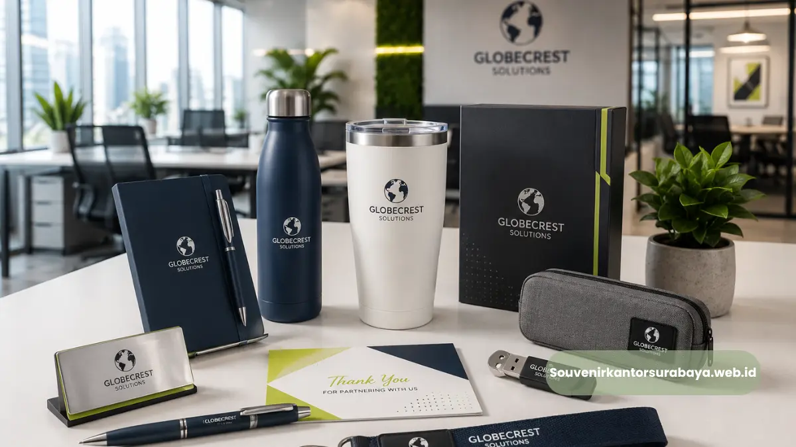
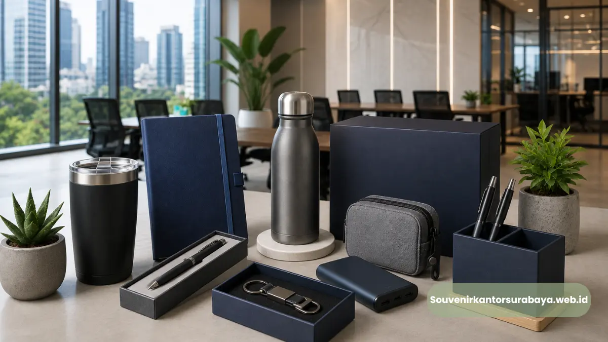

Souvenir kantor elegan untuk mitra bisnis di Surabaya umumnya berupa alat tulis premium, perlengkapan meja kerja, atau aksesori korporat yang dipersonalisasi dengan identitas perusahaan, digunakan untuk memperkuat kesan profesional dalam hubungan bisnis.
Pemilihan souvenir yang tepat mencerminkan tingkat formalitas acara sekaligus penghargaan terhadap relasi yang dijalin.
- Souvenir elegan mencerminkan keseriusan dan kredibilitas perusahaan di mata mitra bisnis.
- Alat tulis premium seperti pulpen menjadi salah satu kategori souvenir yang paling banyak digunakan.
- Pemilihan jenis souvenir sebaiknya disesuaikan dengan konteks dan level formalitas acara.
- Personalisasi identitas brand menjadi nilai tambah penting dalam setiap jenis souvenir.
Mengapa Souvenir Elegan Penting dalam Hubungan Bisnis?
Souvenir elegan penting dalam hubungan bisnis karena menjadi representasi fisik dari penghargaan dan keseriusan perusahaan terhadap mitra kerja sama, yang secara tidak langsung memengaruhi persepsi kredibilitas di mata penerima.
Dalam konteks bisnis, kesan pertama maupun kesan yang tertinggal setelah pertemuan formal sering kali menjadi faktor yang memengaruhi keberlanjutan hubungan kerja sama.
Souvenir yang dipilih secara asal-asalan dapat memberikan kesan kurang serius, sementara souvenir yang elegan dan dipersonalisasi menunjukkan bahwa perusahaan menghargai relasi tersebut secara mendalam.
Apa Saja Kategori Souvenir Kantor yang Dianggap Elegan?

Kategori souvenir kantor yang umumnya dianggap elegan meliputi alat tulis premium, perlengkapan meja kerja, aksesori korporat, dan barang koleksi bernilai simbolis yang dapat dipersonalisasi dengan identitas perusahaan.
Alat tulis premium seperti pulpen bermerek menjadi salah satu pilihan paling populer karena fungsinya yang praktis namun tetap memiliki kesan mewah.
Selain itu, perlengkapan meja kerja seperti buku catatan berbahan kulit, organizer meja, atau plakat penghargaan juga sering digunakan dalam konteks formal.
Aksesori korporat seperti gantungan kunci logam atau kotak kartu nama turut menjadi pelengkap yang memperkuat kesan profesional secara menyeluruh.
Setiap kategori memiliki karakteristik berbeda, namun kesamaan yang menonjol adalah penekanan pada kualitas material, kerapian personalisasi, dan kesesuaian dengan identitas visual perusahaan pemberi.
Bagaimana Konteks Acara Memengaruhi Pemilihan Jenis Souvenir?
Konteks acara sangat memengaruhi pemilihan jenis souvenir, karena tingkat formalitas dan tujuan acara menentukan jenis produk yang paling sesuai untuk diberikan kepada mitra bisnis.
Pada acara penandatanganan kerja sama strategis, souvenir dengan kesan sangat formal seperti alat tulis premium atau plakat penghargaan lebih sesuai dibanding merchandise kasual.
Sementara itu, pada acara internal seperti gathering karyawan, souvenir dengan sentuhan lebih santai namun tetap berkualitas dapat menjadi pilihan yang lebih relevan.
Memahami konteks ini penting agar souvenir yang diberikan benar-benar selaras dengan pesan yang ingin disampaikan perusahaan.
Apa Peran Personalisasi dalam Meningkatkan Nilai Souvenir?
Personalisasi berperan penting dalam meningkatkan nilai souvenir karena mengubah barang generik menjadi produk yang terasa eksklusif dan relevan dengan identitas perusahaan pemberi maupun penerima.
Ukiran nama perusahaan, logo, atau bahkan nama penerima pada souvenir menciptakan kesan bahwa barang tersebut dibuat khusus, bukan sekadar produk massal. Hal ini secara psikologis meningkatkan nilai emosional souvenir di mata penerima, sekaligus memperkuat asosiasi positif terhadap brand yang memberikannya.
Semakin relevan personalisasi dengan momen pemberian, semakin besar pula kesan mendalam yang tercipta.
Bagaimana Souvenir Elegan Mendukung Kesan Profesional Perusahaan Secara Konsisten?
Souvenir elegan mendukung kesan profesional secara konsisten karena setiap detail produk, mulai dari material hingga kemasan, turut mencerminkan standar kualitas yang dijaga oleh perusahaan pemberi.
Kualitas yang konsisten pada setiap souvenir yang diberikan membangun persepsi bahwa perusahaan memiliki standar tinggi dalam segala aspek operasionalnya, tidak hanya pada produk atau layanan utama.
Konsistensi ini penting terutama bagi perusahaan yang secara rutin memberikan souvenir kepada berbagai mitra bisnis, karena reputasi tersebut terbangun secara bertahap melalui pengalaman berulang.
Bagi perusahaan di Surabaya yang ingin memastikan souvenir kantor tampil elegan dan sesuai identitas brand, tim souvenirkantorsurabaya.web.id siap membantu mewujudkan kebutuhan tersebut dengan hasil personalisasi yang rapi dan profesional.
Souvenir kantor elegan untuk mitra bisnis di Surabaya mencakup berbagai kategori, mulai dari alat tulis premium hingga aksesori korporat, dengan personalisasi sebagai kunci utama peningkatan nilainya.
Pemilihan yang tepat, disesuaikan dengan konteks acara dan identitas brand, dapat memperkuat kesan profesional serta hubungan jangka panjang dengan mitra bisnis.
Untuk mewujudkan souvenir kantor yang elegan dan berkesan, Anda dapat mempercayakan kebutuhan tersebut kepada souvenirkantorsurabaya.web.id

Hawa Nadira
Tim penulis CorporateGifts ID berfokus pada strategi souvenir kantor, merchandise korporat, dan inovasi brand untuk klien B2B.
Keahlian: Branding perusahaan, produksi souvenir, paket event, desain materi promosi.
Artikel Terkait

Pulpen Parker Ukir Nama Perusahaan
Solusi premium untuk souvenir perusahaan dan hadiah eksklusif.
Baca Selengkapnya
Merchandise Perusahaan untuk Promosi Bisnis
Ide merchandise korporat yang efektif untuk meningkatkan visibilitas brand dan impresi profesional.
Baca Selengkapnya
Ide Souvenir Kantor
Pilihan souvenir kantor dengan sentuhan branding yang membuat acara perusahaan semakin berkesan.
Baca Selengkapnya